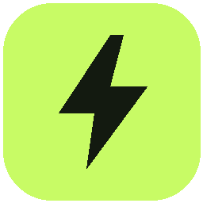

Игровой профиль
Отключите фоновую запись и настройте питание на производительность, если Windows поддерживает этот режим.

Absolute OptimizerСостояние системы и настройки для игр
Отключите фоновую запись и настройте питание на производительность, если Windows поддерживает этот режим.
Текущая загрузка
Использование памяти
По последнему замеру
12 измерений до выбранного хоста
Системные настройки и приоритет игры
На совместимой Windows 11 меняется режим при питании от сети. В других случаях используется схема высокой производительности, если она доступна.
Отключение записи Xbox Game Bar для текущего пользователя. Перезапустите игру после изменения.
Эффект зависит от нагрузки и железа. Схема высокой производительности может повысить расход батареи.
Изменение действует до закрытия процесса. Приоритет можно вернуть раньше.
Настройки, которые применяются индивидуально для каждой игры.
Управление фоновыми задачами во время игры.
Выбор производительного GPU, если их несколько.
Пинг, разброс задержки и потери пакетов
Каждый тест отправляет 12 запросов на один IP-адрес.
QoS требует прав администратора и сбрасывается после перезагрузки Windows. Сравнивайте пинг при одинаковой нагрузке.